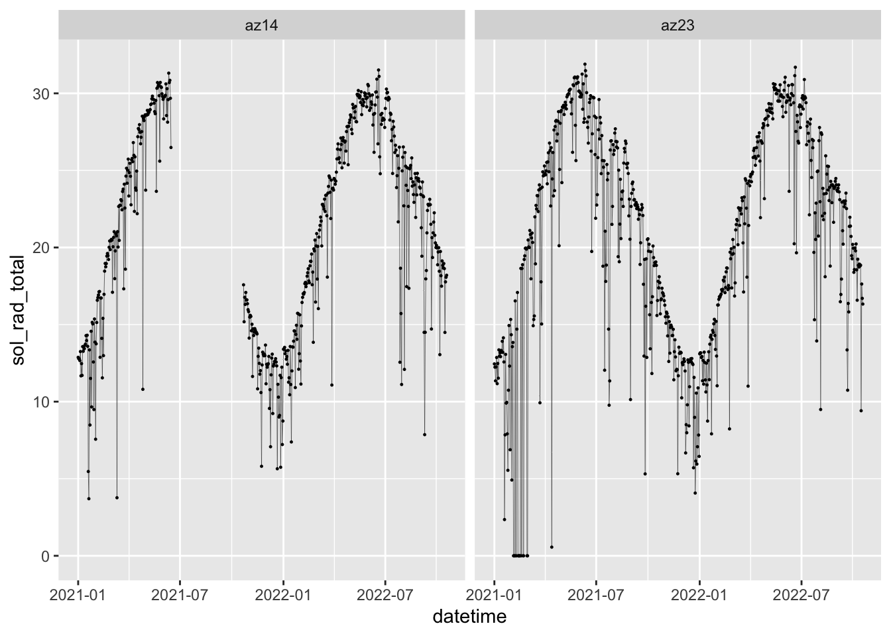
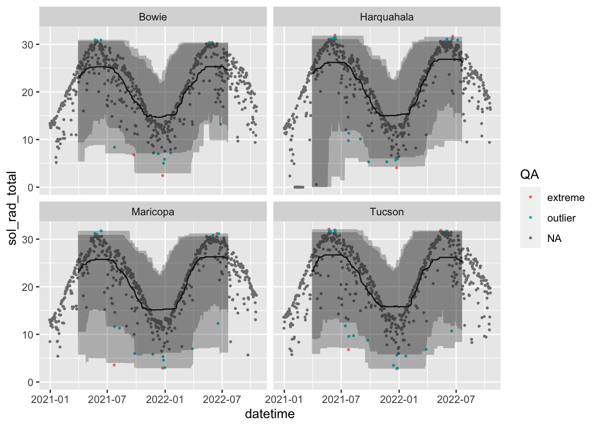
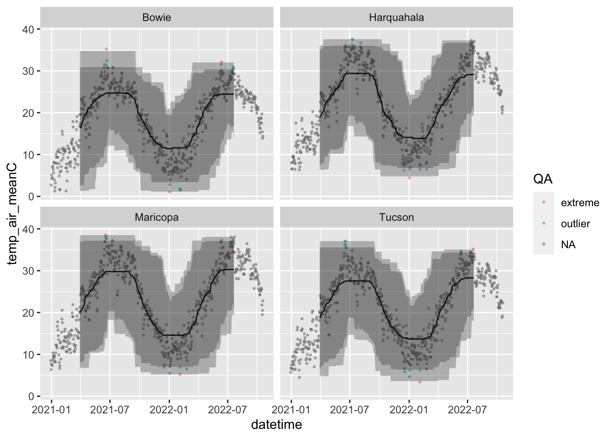

# remotes::install_github("cct-datascience/azmetr")
library(azmetr)
library(tsibble)
library(tidyverse)
library(lubridate)azmet-qaqc
1 Load packages
2 Get Data
Get some data to play around with
daily <- az_daily(start_date = "2019-01-01")
min(daily$datetime)[1] "2020-12-30"3 Basic exploration
Convert to tsibble for exploration
daily_ts <- as_tsibble(daily, key = c(meta_station_id, meta_station_name), index = datetime)Any gaps in the data?
daily_ts |> scan_gaps()# A tsibble: 128 x 3 [1D]
# Key: meta_station_id, meta_station_name [1]
meta_station_id meta_station_name datetime
<chr> <chr> <date>
1 az14 Yuma N.Gila 2021-06-16
2 az14 Yuma N.Gila 2021-06-17
3 az14 Yuma N.Gila 2021-06-18
4 az14 Yuma N.Gila 2021-06-19
5 az14 Yuma N.Gila 2021-06-20
6 az14 Yuma N.Gila 2021-06-21
7 az14 Yuma N.Gila 2021-06-22
8 az14 Yuma N.Gila 2021-06-23
9 az14 Yuma N.Gila 2021-06-24
10 az14 Yuma N.Gila 2021-06-25
# … with 118 more rowsyes, let’s make them explicit NAs
daily_ts <- fill_gaps(daily_ts, .full = TRUE)Check that gaps were made explicit:
Code
daily_ts |>
filter(meta_station_id %in% c("az23", "az14"))|>
ggplot(aes(x = datetime, y = sol_rad_total)) +
geom_line(na.rm = TRUE, size = 0.1) +
geom_point(na.rm = TRUE, size = 0.2) +
facet_wrap(~meta_station_id)
Any rows marked as needing review?
daily_ts |> filter(meta_needs_review != 0)# A tsibble: 131 x 69 [1D]
# Key: meta_station_id, meta_station_name [29]
meta_bat_vo…¹ meta_…² meta_…³ meta_…⁴ meta_…⁵ meta_…⁶ meta_…⁷ chill…⁸ chill…⁹
<dbl> <dbl> <dbl> <dbl> <chr> <chr> <dbl> <dbl> <dbl>
1 14.2 13.2 12.5 1 az01 Tucson 0 0 13
2 14.1 13.1 12.5 1 az01 Tucson 0 0 14
3 14.1 13.1 12.5 1 az01 Tucson 0 0 15
4 14.2 13.1 12.5 1 az01 Tucson 0 0 13
5 14.1 13.1 12.5 1 az01 Tucson 0 0 12
6 14.1 13.1 12.5 1 az01 Tucson 0 0 15
7 14.0 13.1 12.6 1 az01 Tucson 0 0 15
8 14.1 13.1 12.6 1 az01 Tucson 0 0 16
9 13.7 12.9 12.6 1 az01 Tucson 0 0 23
10 14.4 13.3 12.6 1 az02 Yuma V… 0 0 4
# … with 121 more rows, 60 more variables: chill_hours_32F <dbl>,
# chill_hours_45F <dbl>, chill_hours_68F <dbl>, chill_hours_7C <dbl>,
# date_doy <dbl>, date_year <dbl>, datetime <date>, dwpt_mean <dbl>,
# dwpt_meanF <dbl>, eto_azmet <dbl>, eto_azmet_in <dbl>, eto_pen_mon <dbl>,
# eto_pen_mon_in <dbl>, heat_units_10C <dbl>, heat_units_13C <dbl>,
# heat_units_3413C <dbl>, heat_units_45F <dbl>, heat_units_50F <dbl>,
# heat_units_55F <dbl>, heat_units_7C <dbl>, heat_units_9455F <dbl>, …Any duplicates?
daily_ts |> is_duplicated(key = meta_station_id, index = datetime)[1] FALSECheck solar radiation.
Code
daily_ts |>
filter(sol_rad_total < 1 & !is.na(sol_rad_total)) |>
select(datetime, sol_rad_total, meta_station_id, meta_needs_review) |>
arrange(sol_rad_total)# A tsibble: 19 x 5 [1D]
# Key: meta_station_id, meta_station_name [4]
datetime sol_rad_total meta_station_id meta_needs_review meta_station_name
<date> <dbl> <chr> <dbl> <chr>
1 2021-02-04 0 az23 0 Harquahala
2 2021-02-05 0 az23 0 Harquahala
3 2021-02-06 0 az23 0 Harquahala
4 2021-02-08 0 az23 0 Harquahala
5 2021-02-09 0 az23 0 Harquahala
6 2021-02-12 0 az23 0 Harquahala
7 2021-02-13 0 az23 0 Harquahala
8 2021-02-14 0 az23 0 Harquahala
9 2021-02-15 0 az23 0 Harquahala
10 2021-02-16 0 az23 0 Harquahala
11 2021-02-18 0 az23 0 Harquahala
12 2021-02-21 0 az23 0 Harquahala
13 2021-02-22 0 az23 0 Harquahala
14 2021-02-28 0 az23 0 Harquahala
15 2021-03-01 0 az23 0 Harquahala
16 2021-04-30 0 az24 0 Roll
17 2021-04-12 0.0729 az08 0 Parker
18 2021-06-24 0.275 az22 0 Queen Creek
19 2021-04-13 0.562 az23 0 Harquahala Seems like too many 0s for solar radiation, and none are marked as needing review.
4 Sliding windows
I’ll explore the sliding window quantile approach used in (Faybishenko et al. 2021). I’ll use slider because it’s tidyverse-friendly and I want to learn it. I’ll use a rolling, centered, 6-month window to calculate upper and lower 95% and 99% quantiles. Anything outside of the rolling 99% quantile is an “extreme” value, which Faybishenko et al. (2021) assumed was bad data, and anything between the 95% and 99% quantile is an “outlier” which is suspect, but not necessarily bad.
In the plots below, I only show a few stations for clarity.
4.1 Solar radiation
Code
library(slider)
sol_roll_test <-
daily_ts |>
group_by_key() |>
select(sol_rad_total) |>
mutate(
sol_rolling_median = slide_dbl(
sol_rad_total,
median,
.before = 90,
.after = 90,
.complete = TRUE
)
) |>
mutate(sol_upper95 = slide_dbl(
sol_rad_total,
\(x) quantile(x, c(0.975), na.rm = TRUE),
.before = 90,
.after = 90,
.complete = TRUE
)) |>
mutate(sol_lower95 = slide_dbl(
sol_rad_total,
\(x) quantile(x, c(0.025), na.rm = TRUE),
.before = 90,
.after = 90,
.complete = TRUE
)) |>
mutate(sol_upper99 = slide_dbl(
sol_rad_total,
\(x) quantile(x, c(0.999), na.rm = TRUE),
.before = 90,
.after = 90,
.complete = TRUE
)) |>
mutate(sol_lower99 = slide_dbl(
sol_rad_total,
\(x) quantile(x, c(0.001), na.rm = TRUE),
.before = 90,
.after = 90,
.complete = TRUE
)) |>
mutate(QA = case_when(
sol_rad_total > sol_lower99 & sol_rad_total < sol_lower95 ~ "outlier",
sol_rad_total > sol_upper95 & sol_rad_total < sol_upper99 ~ "outlier",
sol_rad_total < sol_lower99 ~ "extreme",
sol_rad_total > sol_upper99 ~ "extreme",
is.na(sol_rad_total) ~ NA_character_
)) Adding missing grouping variables: `meta_station_id`, `meta_station_name`Code
sol_roll_test |>
filter(meta_station_name %in% c("Bowie", "Harquahala", "Tucson", "Maricopa")) |>
ggplot(aes(x = datetime)) +
geom_point(aes(y = sol_rad_total, color = QA), size = 0.5) +
geom_line(aes(y = sol_rolling_median)) +
geom_ribbon(aes(ymin = sol_lower95, ymax = sol_upper95), alpha = 0.3) +
geom_ribbon(aes(ymin = sol_lower99, ymax = sol_upper99), alpha = 0.3) +
facet_wrap(~meta_station_name)Warning: Removed 3 rows containing missing values (geom_point).Warning: Removed 181 row(s) containing missing values (geom_path).
4.2 Precipitation
Code
precip_roll_test <-
daily_ts |>
select(precip_total_mm) |>
group_by_key() |>
mutate(
precip_rolling_median = slide_dbl(
precip_total_mm,
median,
.before = 90,
.after = 90,
.complete = TRUE
)
) |>
mutate(precip_upper95 = slide_dbl(
precip_total_mm,
\(x) quantile(x, c(0.975), na.rm = TRUE),
.before = 90,
.after = 90,
.complete = TRUE
)) |>
mutate(precip_lower95 = slide_dbl(
precip_total_mm,
\(x) quantile(x, c(0.025), na.rm = TRUE),
.before = 90,
.after = 90,
.complete = TRUE
)) |>
mutate(precip_upper99 = slide_dbl(
precip_total_mm,
\(x) quantile(x, c(0.999), na.rm = TRUE),
.before = 90,
.after = 90,
.complete = TRUE
)) |>
mutate(precip_lower99 = slide_dbl(
precip_total_mm,
\(x) quantile(x, c(0.001), na.rm = TRUE),
.before = 90,
.after = 90,
.complete = TRUE
)) |>
mutate(QA = case_when(
precip_total_mm > precip_lower99 & precip_total_mm < precip_lower95 ~ "outlier",
precip_total_mm > precip_upper95 & precip_total_mm < precip_upper99 ~ "outlier",
precip_total_mm < precip_lower99 ~ "extreme",
precip_total_mm > precip_upper99 ~ "extreme",
is.na(precip_total_mm) ~ NA_character_
)) Code
precip_roll_test |>
filter(meta_station_name %in% c("Bowie", "Harquahala", "Tucson", "Maricopa")) |>
ggplot(aes(x = datetime)) +
geom_point(aes(y = precip_total_mm, color = QA), size = 0.5) +
# geom_line(aes(y = precip_rolling_median)) +
geom_ribbon(aes(ymin = precip_lower95, ymax = precip_upper95), alpha = 0.3) +
geom_ribbon(aes(ymin = precip_lower99, ymax = precip_upper99), alpha = 0.3) +
facet_wrap(~meta_station_name)Warning: Removed 3 rows containing missing values (geom_point).
4.3 Temperature
Code
temp_roll_test <-
daily_ts |>
select(temp_air_meanC) |>
group_by_key() |>
mutate(
rolling_median = slide_dbl(
temp_air_meanC,
median,
.before = 90,
.after = 90,
.complete = TRUE
)
) |>
mutate(upper95 = slide_dbl(
temp_air_meanC,
\(x) quantile(x, c(0.975), na.rm = TRUE),
.before = 90,
.after = 90,
.complete = TRUE
)) |>
mutate(lower95 = slide_dbl(
temp_air_meanC,
\(x) quantile(x, c(0.025), na.rm = TRUE),
.before = 90,
.after = 90,
.complete = TRUE
)) |>
mutate(upper99 = slide_dbl(
temp_air_meanC,
\(x) quantile(x, c(0.999), na.rm = TRUE),
.before = 90,
.after = 90,
.complete = TRUE
)) |>
mutate(lower99 = slide_dbl(
temp_air_meanC,
\(x) quantile(x, c(0.001), na.rm = TRUE),
.before = 90,
.after = 90,
.complete = TRUE
)) |>
mutate(QA = case_when(
temp_air_meanC > lower99 & temp_air_meanC < lower95 ~ "outlier",
temp_air_meanC > upper95 & temp_air_meanC < upper99 ~ "outlier",
temp_air_meanC < lower99 ~ "extreme",
temp_air_meanC > upper99 ~ "extreme",
is.na(temp_air_meanC) ~ NA_character_
)) Code
temp_roll_test |>
filter(meta_station_name %in% c("Bowie", "Harquahala", "Tucson", "Maricopa")) |>
ggplot(aes(x = datetime)) +
geom_point(aes(y = temp_air_meanC, color = QA), size = 0.5, alpha = 0.5) +
geom_line(aes(y = rolling_median)) +
geom_ribbon(aes(ymin = lower95, ymax = upper95), alpha = 0.3) +
geom_ribbon(aes(ymin = lower99, ymax = upper99), alpha = 0.3) +
facet_wrap(~meta_station_name)Warning: Removed 3 rows containing missing values (geom_point).Warning: Removed 181 row(s) containing missing values (geom_path).
References
Faybishenko, Boris, Roelof Versteeg, Gilberto Pastorello, Dipankar Dwivedi, Charuleka Varadharajan, and Deb Agarwal. 2021. Quality Assurance and Quality Control (QA/QC) of Meteorological Time Series Data for Billy Barr, East River, Colorado USA. Environmental System Science Data Infrastructure for a Virtual Ecosystem. https://doi.org/10.15485/1823516.